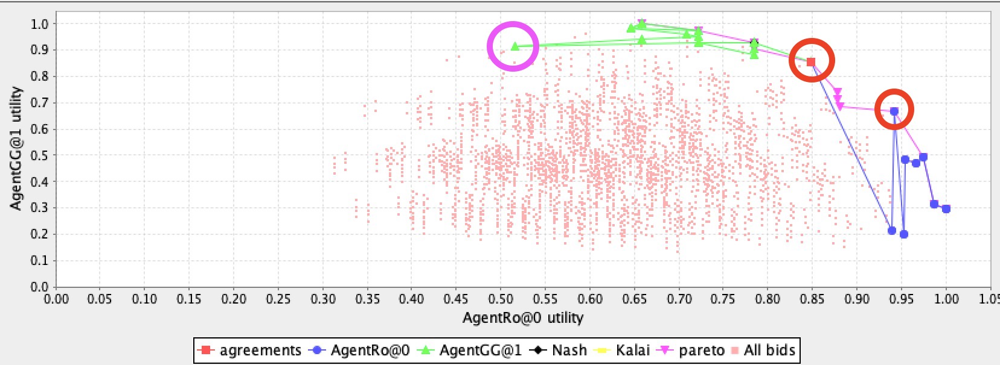
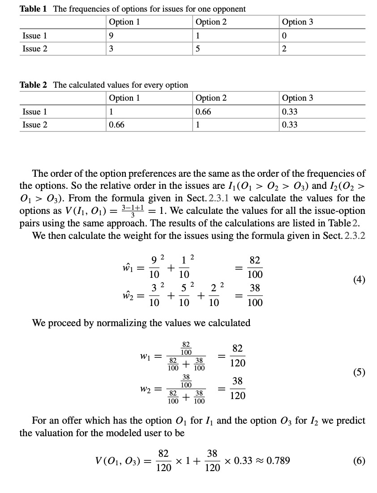

知彼
在这一节内容里，终于迎来了最令人激动的环节：预测对手模型(predict the opponent model)🥳。你不仅会学到衡量一个offer的质量的评价标准(Quality Metrics)🙄，更能学到干货： Johny Black， 这个在Lab3中提到的预测对手模型的方法的实现细节😛，这肯定会帮助你少走弯路，并且节省很多时间😇。
注意🐞：这一节也是大部分同学与这门课大作业脱钩的地方。因为涉及到自己实现预测对手模型，没有Java基础的童鞋很容易在Hashmap和面向对象编程这里畏缩，放弃，然后扔给一个同学来写。如果你们确实遇到这样的问题，可以参考我的实现方法。虽然我Java代码写的一般般。但是它是能跑的起来的噢。如果你能认真读一遍，理解一遍，我觉得你的收获会非常的大，你甚至可以理解到面向对象的妙处😎，这对你以后找工作也好，刷题也好，都能起到帮助。
Quality Metrics
首先需要知道的是，我们有很多手段去测量自己的agent表现的好不好👍。这其中包括四种，个体效用(Individual Utility),社会福利(Social Welfare),距离帕累托效用边界的距离(Distance to Pareto Efficient Frontier)和距离纳什均衡点的距离(Distance to Nash Point)。👾下面我会用比较简单的表达来告诉你这些词的意义，以及会怎么用。具体的数学公式还是需要你们自己去看Lab3的内容(虽然部分的内容，考试不会考，agent设计也用不到🤡)。
Individual Utility
Individual Utility, 我在之前提到过，每一个offer对不同的agent会有不同的utility。实际上这也是用的最多的metrics方法来评估你的agent的表现。比方说，你的agent能够准确的计算出当前offer给自己和给对方带来多少utility，这叫知己知彼，才能百战不殆👨💻
Social Welfare
Social Welfare，社会福利。如果你的agent能使双方的utility之和最大，那也是非常好的agent。ANAC比赛中有个评价标准就是social welfare。这个比较容易理解👨🏫
Distance to Pareto Efficient Frontier
Pareto Efficient Frontier，帕累托效用边界。在之前讲basic concept的时候，推荐你们去知乎读这个 如何通俗地解释「帕累托最优」（Pareto optimum）？🧠。
如果说让我一句话举例什么叫帕累托最优，那就是:假设能让我获得效用为0.8的offer有3个：
- offer1: 我得0.8，你得0.6。
- offer2: 我得0.8，你得0.5。
- offer3: 我得0.8，你得0.4。
那么offer1就是帕累托最优的offer。因为我已经没办法在不损失自己效用的情况下，提升你的效用💁♂️。
如果说让我一句话概括什么叫帕累托最优: 这个是我能给你的最好的报价了。如果你想比这个更好，那我自己就得亏了（比如我得0.7,你得0.7，这种情况，我是亏了0.1🙅♂️）。
干货：帕累托效用边界，考试可能会考。下学期选计算金融的，需要对这个概念有印象。然后在agent大作业的时候，主要是chooseAction中报价策略中，你要考虑尽可能自己的offer是当前能给对手最高utility的offer（注意🐞，因为你的算法会存在误差，建议报offer的时候，可以设定一个阈值，出一个offer是能给对手最高utility的95%或者90%）。这样你的offer就容易贴着帕累托效用边界🦄。
为了加深大家对Pareto Optimum的理解，以及在Genius中的运用。我继续用我的agent和agentGG博弈的结果给大家举例。从下图可以看出，红色的两个圈内的offer都是在Pareto Efficient Frontier上的，我的报价都是在保证我自己的utility的前提下，给了agentGG最高的utility。粉圈内的offer，就不是一个帕累托最优的offer，因为在它的右边，还有那么多能给我带来高utility的offer，agentGG偏偏选了一个给我低utility的offer，说明它不是很厚道🐣(当然，这跟他基于频数的计算有关，甚至我的几次出价也没有给它带来最高utility,因为我的预测对手算法--Johny Black，也是基于频数的。基于频数的算法有个特点，就是刚开始不准，但是到后来会越来越准。我在后面会和大家细讲这个Johny Black。) 
Distance to Nash Point
这个知识点没啥好说的。看公式意会一下就好。当然，要注意的是，纳什点与你们在学囚徒困境的时候学的纳什均衡不是同一个概念。
你可能会问，为什么我回答这小节这么随意呢😓一方面 \(argmax\) 这种情况很难计算。另外一方面，\(U_{i}\left(o_{\text {disagr}}\right)\),你要考虑未达成一致的协议的情况，导致很难取求纳什点。至少我没有计算很准确的纳什点。为什么这个这么重要😣因为我们那一届，如果你和对手达成一致的offer距离Nash point很近的话，是可以当做bonus，分数会高很多的。
有些人的Agent很头铁，非要给自己utility 0.9, 给对手0.3。虽然你的individual utility高，但是你的nash point这一项分数低的吓人(这也是为什么会出现负分的情况)。
我觉得如果说看完我这套docs,你能学到一个比较好的预测对手模型算法和一个比较好的预测自己模型的算法，但是想要得到突破，那就要在这个地方有所突破(前提是今年的bonus还是Nash point)，因为我这个得分点做的不是很好🥬。
Johny Black
理论
接下来我会带大家一起用Java复现Johny Black论文，当然，默认大家已经读过这篇论文了，没读的点击👆 Johny Black,下载下来读一读哈。
当然，这篇论文也写了Accepting strategy (接受offer的策略) 和 Bidding strategy(出价策略)。你们也可以学习一下。但是他没有写预测自己模型的策略，因为那时候比赛还没有引入这个机制👀。
这篇论文其实还是比较容易理解的(比起Foundation of AI 让你读的那些五六十年代的长篇文章，这篇真的是良心，你能读得懂，并且你能容易复现🤣)，其实文章的开头部分你都可以略读，但是到了 2.3.3 Example Model这一节，你只需要把这个例子自己推一遍，如下图，就可以理解Johny Black的精髓: 通过频数去推断对手更想获得的option。

什么意思呢😇？打个比方，在issue这个下面有可乐，雪碧，芬达三个options。如果你更喜欢可乐，最不喜欢芬达。那么你的每一次offer，都会尽可能的去选可乐。可能你报的10个offer中，有7个选了可乐，2个选了雪碧，1个选了芬达。那么你的偏好就会被我知道啦！🤪
Java代码实现
（注意🐞：切记直接抄代码，或者只是修改变量名，而非修改逻辑。IA这门课是会对过去的代码进行查重的噢。在英国，抄袭可是很严重的。）
在Java代码实现的过程中，我们需要明确一个概念，就是尽可能的利用Genius提供的类去写代码🤔。比方说，import genius.core.issue.Value; Genius提供了Value这个类，那我们就得想尽办法在这个类的基础上去进行值的操作。这样，你在实现的过程中会简单许多🤫 ！
当然，我的java能力不是特别好。如果有java大哥能写出更优质的代码，欢迎issue🥬。
定义一个新的类: ValueNew
首先，我定义了一个新的类，叫ValueNew。可以看到，我这个ValueNew里，存放了一个Value属性的值名字叫valuename。也就是说，我这个值通过调用valuename来实现Genius的中的Value类型的功能。
不仅如此，我还让我的ValueNew继承了 Comparator的接口。原先的Value类型是无法比较大小的。但是现在，我继承了Comparator接口，让其在compare()函数中定义了一个比较规则，规定，所有的ValueNew类型的值，根据其内部的count数来排大小🐷。 (Java萌新注意:这里一下子就提到了面向对象的两个特性:继承和多态。首先我们继承了Comparator这个接口。这个接口本身就是用来比较大小用的。其次我们也重写了Comparator中的compare()方法，可以理解为重新制定了一个比较方法。)
为什么要那么麻烦继承一个Comparator呢🧐？实际上，回顾Johny Black论文中，里面是不是有个要求，是根据options出现的频数来排顺序？我现在的功能就是完成排顺序这个环节。现在你可能还看不出来这用处，但是到后面你就会理解啦。
import genius.core.issue.Value;
import java.util.Comparator;
public class ValueNew implements Comparator<ValueNew> {
public Value valueName;
public int count=0; //计数器，记录一共出现了多少次
public int rank=0; //根据options出现的次数，排一个rank，其中出现次数越多，rank越大
public int totalOfOptions=0; //记录当前options有多少个。也就是说一个value下有多少个options
public int countBidNumber=0; //记录对手一共出了多少次bid，也就是每个issue中的value总频数
public double calculatedValue=0.0f; //论文上用来计算每个options的calculatedValue
public double weightUnnormalized=0.0f; //在论文中是count/出现的总次数值
public ValueNew(Value valueName) {
this.valueName = valueName;
}
//我们需要根据count数目进行排序
@Override
public int compare(ValueNew o1, ValueNew o2) {
if(o1.count < o2.count){
return 1;
}else{
return -1;
}
}
public void compute(){
this.calculatedValue=((this.totalOfOptions-(double)this.rank+1)/this.totalOfOptions);
double temp=((double) this.count/(double) this.countBidNumber);
this.weightUnnormalized=Math.pow(temp,2);
}
}
至于compute()这个函数，其实是为了计算 \(\hat{w}_{1}=\frac{{9}^{2}}{10}+\frac{{1}^{2}}{10} \quad=\frac{82}{100}\) 中每个value的权重，比如这个\(\frac{{9}^{2}}{10}\)。也就是说，每个ValueNew都具备自我计算权重的能力！🤓
定义一个新的类: IaMap
在上面，我们已经定义了一个ValueNew类，但仅有这个，还是不够的。打个比方，饮料issue下可能有三个ValueNew,可乐，雪碧，芬达。我现在只是能知道这些ValueNew的权重，但我并不知道饮料这个Issue的权重。那么这个issue的权重怎么求呢🧐 。论文中的 (5) 公式可以发现(下图)，我们需要将这个issue下的每个ValueNew的权重计算出来之后，选取最大的ValueNew除以他们的和。比如, 可乐(\(\frac{82}{100}\)) 除以 可乐加雪碧(\(\frac{82}{100}+\frac{38}{100}\))🙄 。
为了实现这个过程，我们肯定是需要用到HashMap的。但是我不能直接去用它。为什么呢？因为对手的offer是不断的更新的，也就是说，对手出一次offer，你就得计算一次，出一次，计算一次🤨...如果你准备用HashMap去实现这个过程，将会复杂无比(for 循环很多，而且要不断的更新HashMap)。
所以，我就新定义了一个类，叫IaMap。它是HashMap的儿子😬，所以继承HashMap的特性。不仅如此，它还能自我的更新与计算。
/**整个类就是一个HashMap**/
public class IaMap extends HashMap<Issue, List<ValueNew>> {
public int countBidNumber=0; //用来计算对手出的bid的数量
HashMap<Issue,Double> weightList=new HashMap<>(); //用来存放每个issue的权重
/**1.整个类的构造函数，用于存放着当前运行下的整个table。可以理解为初始化table**/
public IaMap(UserModel userModel){
super(); //继承所有Hashmap的用法
for(Issue issue:userModel.getDomain().getIssues()){ //遍历当前问题下的所有issue
IssueDiscrete values=(IssueDiscrete) issue; //将issue展开为每个value
List<ValueNew> list =new ArrayList<>(); //每一个issue都要创建自己的一个List<ValueList>
for(int i=0;i<values.getNumberOfValues();i++){ //因为这里的Value类型不能直接for each，只能用getNumberOfValues
ValueNew temp=new ValueNew(values.getValue(i)); //对于每一个value类型，我们都转化为ValueNew类型
list.add(temp); //对于每一个value，我们都会将valueNew放进列表里
}
this.put(issue,list);
}
}
}
可以看出，IaMap继承了HashMap<Issue,List<ValueNew>>, 它的key存放着每个issue，value存放着这个issue下的所有ValueNew的列表。
IaMap的构造函数(不懂构造函数的同学，可以理解为实例化一个类的时候，需要构造函数传值进去，初始化先)接收一个UserModel类型的对象。然后，通过UserModel提供的getIssue()方法，获取每个issue，以及issue下的value。因为我们得告诉模型，这个问题下有哪些value，然后才能进行频数的积累🤠。
最方便的是，每次我们遍历一个issue之后，我们可以直接通过this.put(issue,list)把它存起来。因为IaMap本身就是一个HashMap。
接下来就是定义IaMap中接收offer，并将其加入计算的方法啦。下面的代码确实有点长(可能是因为我自己写的比较啰嗦，应该可以被优化🤔)。 可以发现，我们慢慢的将ValueNew中的totalOfOptions，rank，calculatedValue，weightUnnormalized计算好。最好算出对手所有issue下的权重。
/**2.计算jonnyBlack的方法**/
public void JonnyBlack(Bid lastOffer){
this.countBidNumber+=1; //用来算现在有多少个bid的数据了
//先遍历，打出个频数表
for(Issue issue: lastOffer.getIssues()){
int num=issue.getNumber(); //每一个issue我们都要将其转换为一个编号
for(ValueNew valueNew:this.get(issue)){ //通过issue我们可以找到IaMap中的每一行
if(valueNew.valueName.toString().equals(lastOffer.getValue(num).toString())){ //注意，每个bid都可以通过getValue(num)知道这个issue(issue对应的num)下到底是什么value
valueNew.count+=1;
}
//这里要赋值每一个valueNew对象一个totalOfOptions的值，用来计算在当前这个value下，有多少个options。
IssueDiscrete issueDiscrete=(IssueDiscrete) issue;
valueNew.totalOfOptions=issueDiscrete.getNumberOfValues(); //每个options的数量传进去
valueNew.countBidNumber=this.countBidNumber; //还要把这是第几个bid也传进去
}
Collections.sort(this.get(issue),this.get(issue).get(0));//每次对每一个list（this.get(issue)返回的是一个list），就对list进行降序。这里重写了排序方式，是根据count进行比较的
//因为上面刚排序完，我们需要根据这个排序，重新赋予每一个valueNew一个rank值，其中频数越大,rank值小
for(ValueNew valueNew:this.get(issue)){ //通过issue我们可以找到IaMap中的每一行
valueNew.rank=this.get(issue).indexOf(valueNew)+1;
}
}
//上面只是把表打好，但是一些计算还没有做好，所以现在要重新遍历一下每一个valueNew对象
for(Issue issue:lastOffer.getIssues()){
for(ValueNew valueNew:this.get(issue)){
valueNew.compute(); //这一步主要是要把ValueNew内部的calculatedValue和weightUnnormalized计算好
}
}
//做到这，该有的数据其实都有了，开始利用所有的数据，算权重了。但是这个循环不是为了算权重。而是为了归一化，求的分母totalWeight。（论文中第五个公式的分母）
double totalWeight=0.0f; //先初始化一个总的权重，用于后来的归一化。
for(Issue issue: lastOffer.getIssues()){
for(ValueNew valueNew:this.get(issue)){
totalWeight+=valueNew.weightUnnormalized;
}
}
//现在才开始算每一个issue的权重
for(Issue issue:lastOffer.getIssues()){
double issueWeightUnnormalized=0; //存放每个issue的权重的临时变量
for(ValueNew valueNew:this.get(issue)){
issueWeightUnnormalized+=valueNew.weightUnnormalized;
}
double issueWeight=issueWeightUnnormalized/totalWeight;
this.weightList.put(issue,issueWeight);
}
//我们现在知道了每个issue的权重，现在需要来根据权重和每个value的evaluation来计算效用。
//计算效用
double utility=0.0f; //先进行初始化
for(Issue issue:lastOffer.getIssues()){
int num=issue.getNumber(); //每一个issue我们都要将其转换为一个编号
for(ValueNew valueNew:this.get(issue)){
if(valueNew.valueName.toString().equals(lastOffer.getValue(num).toString())){ //注意，每个bid都可以通过getValue(num)知道这个issue(issue对应的num)下到底是什么value
utility+=weightList.get(issue)*valueNew.calculatedValue;
break; //如果找到了，后面的valueNew就不需要找了。
}
}
}
System.out.println(countBidNumber+"对手效用是！！！！！！"+utility);
}
当然，要怎么用这个呢？回到你的agentXX中，我们每一次接收一个offer，是不是通过receiveMessage(AgentID sender, Action action)这个方法？那么我们使用JonnyBlack(Bid lastOffer)方法也是放在这。下面的代码可以看到，我每次得到一个对手的offer就把他扔进我的IaMap里进行计算🤖。(iaMap需要在init函数里通过this.iaMap=new IaMap(userModel);初始化👻)
@Override
public void receiveMessage(AgentID sender, Action action)
{
if (action instanceof Offer) //instanceof 判断对象是否为Offer的一个实例
{
lastOffer = ((Offer) action).getBid();
iaMap.JonnyBlack(lastOffer);
}
}
最后，你要给IaMap提供一个方法，这样，在你自己出offer的时候，可以看看自己准备出的offer，对手可以得到多少utility。(🤫一般是在出价策略的时候，会用到这个方法。因为你每次出价都得先知道自己要出的offer到底是对对方有利，还是不利)
public double JBpredict(Bid lastOffer){
//我们现在知道了每个issue的权重，现在需要来根据权重和每个value的evaluation来计算效用。
//计算效用
double utility=0.0f; //先进行初始化
for(Issue issue:lastOffer.getIssues()){
int num=issue.getNumber(); //每一个issue我们都要将其转换为一个编号
for(ValueNew valueNew:this.get(issue)){
if(valueNew.valueName.toString().equals(lastOffer.getValue(num).toString())){ //注意，每个bid都可以通过getValue(num)知道这个issue(issue对应的num)下到底是什么value
utility+=weightList.get(issue)*valueNew.calculatedValue;
break; //如果找到了，后面的valueNew就不需要找了。
}
}
}
return utility;
}
总结
这一章节是不是很刺激。我觉得肯定有人会认真读完我上面写的内容。希望能对你有所帮助。也希望你能有更好的代码结构来实现Johny Black🥊。
当然，我知道很多人忙着读FAI的论文，写FML的lab，没时间去静下心来看这些。这些代码也算是能给你们分担一点压力好了🍺。